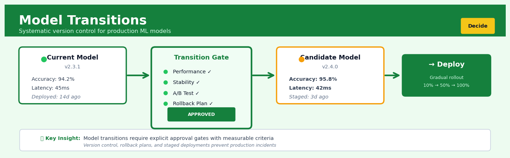

Model Transitions#


Most teams rush model transitions without defining quantitative approval criteria upfront, which leads to either paralysis from subjective debates or risky deployments without proper validation. The best practice is to establish your transition gates before training the candidate model: set exact thresholds for performance metrics, stability windows, and test coverage that must be met. Think of it like a CI/CD pipeline for code but with statistical rigor, you wouldn't merge code without tests passing, so don't deploy models without predefined success metrics.
The 60-Second Version#
What it does: Model Transitions is a structured process for safely replacing an existing prediction model with a new one while proving the new model actually performs better in the real world.
When to use it: Use it whenever you’re ready to deploy an updated model to replace one that’s currently making business decisions—whether due to performance decay, new data, or improved techniques.
What you get back: A go/no-go decision backed by statistical evidence showing whether the new model outperforms the old one enough to justify switching, plus a controlled deployment plan that minimizes risk.
Difficulty |
Moderate |
Typical runtime |
Days to weeks (monitoring period) |
What you bring |
Current production model, candidate replacement model, and performance metrics that matter to your business |
What you get |
Statistical comparison of model performance and a risk-managed transition plan |
Heuristix bucket |
Decide — Decision Intelligence |
Model transitions aren’t about building better models—they’re about proving the new model is actually better before you bet your business on it.
Learning Objectives#
After reading this chapter, a business user will be able to:
Identify situations where replacing a production model requires formal transition management rather than immediate deployment, based on business risk and decision criticality.
Interpret performance comparison metrics and statistical tests to explain whether a new model represents a meaningful improvement over the current system.
Decide whether to proceed with, delay, or cancel a model replacement by weighing quantified performance gains against transition costs and deployment risks.
After reading this chapter, a data scientist will be able to:
Implement a complete model transition process including holdout validation, A/B testing design, and performance degradation monitoring with appropriate statistical controls.
Configure transition parameters such as rollout percentage, monitoring duration, and performance thresholds based on false positive tolerance and business impact considerations.
Diagnose common transition failures including dataset drift, evaluation metric mismatches, and implementation bugs by systematically comparing pre-deployment and production performance patterns.
Overview#
Model Transitions is a decision intelligence technique that systematically manages the process of replacing one predictive model with another in production environments while minimising business risk and quantifying performance changes. It belongs to the family of model lifecycle management and MLOps methods, combining statistical hypothesis testing, performance monitoring, and controlled deployment strategies to ensure that model updates improve—or at least do not degrade—decision quality. The technique provides a rigorous framework for answering the fundamental question: “Is the new model sufficiently better than the incumbent to justify the costs and risks of transition?”
When to Use This#
Use Model Transitions when:
Scheduled model refresh cycles — Your organisation operates on a regular retraining cadence (monthly, quarterly, annually) and needs a systematic process to validate that retrained models outperform their predecessors before deployment.
Concept drift has been detected — Monitoring systems indicate that the relationship between features and targets has shifted, necessitating a new model, but you need to verify the replacement actually handles the drift better.
New modelling approaches are available — A data science team has developed a candidate model using different algorithms, features, or architectures, and stakeholders require statistical evidence of improvement before committing to production changes.
Regulatory or audit requirements demand documentation — Financial services, healthcare, and other regulated industries require formal evidence that model changes are justified and that transition risks have been assessed.
High-stakes decisions depend on model outputs — When model predictions directly drive significant financial, operational, or customer-facing decisions, informal “eyeball” comparisons are insufficient.
Multiple candidate models compete for deployment — A model selection scenario where several alternatives must be rigorously compared against both each other and the incumbent.
Gradual rollout is operationally necessary — Business constraints require phased deployment (shadow mode, canary releases, A/B testing) rather than instantaneous cutover.
Do NOT use Model Transitions when:
No incumbent model exists — For greenfield deployments, use standard model selection and validation techniques instead.
Models are fundamentally incomparable — If the new model predicts a different target, uses a different decision threshold, or serves a different business purpose, transition analysis is not meaningful.
Insufficient evaluation data is available — Statistical tests require adequate sample sizes; attempting transition analysis on dozens of observations will yield inconclusive results.
Questions This Answers#
Risk and Readiness#
Should we deploy this new credit scoring model, or are we putting $50M in loan decisions at risk?
How do we know the new fraud detection system won’t let through more bad transactions than our current one?
What’s the worst-case scenario if we switch models next week — how many customers could be affected before we catch problems?
Are we confident enough in this new model to bet the quarter’s revenue targets on it?
If we roll this out to all 500 stores, what’s our rollback plan if performance tanks?
Performance and Value#
Is the new recommendation engine actually converting better, or are we just seeing normal weekly variation?
The new model scores 3% higher in testing — does that translate to real revenue, or is it just a number?
How much better does the new pricing model need to perform to justify three months of implementation work?
Our current churn predictor works fine — why should we risk switching to something new?
Can we quantify the business impact: will this new model save us \(2M or \)200K?
Execution and Timing#
If we start the transition Monday, when can we safely retire the old model completely?
Should we run both models in parallel, and for how long before we make the call?
Which markets or customer segments should we test this in first — where’s the safest place to start?
The data science team says their new model is ready — how do we validate that before it touches real customers?
How It Works#
Imagine you’re the manager of a busy restaurant, and your head chef wants to replace the long-time sous chef with someone new who claims to cook faster and better. You can’t just fire the old sous chef on Monday and hope for the best—one bad dinner service could lose you regular customers forever. Instead, you run both chefs side-by-side for two weeks: the old sous chef’s dishes still go to customers (safe!), but the new chef prepares the same orders in parallel. You and your staff taste-test both versions, track preparation times, and count how many dishes meet your standards. Only when you have rock-solid evidence that the new chef consistently performs better—and you’ve figured out which dishes they excel at—do you make the switch. Model Transitions works exactly this way, but with predictive models serving decisions instead of chefs serving food.
CURRENT STATE TRANSITION PHASE NEW STATE
┌─────────────┐ ┌─────────────┐ ┌─────────────┐
│ Model A │ │ Model A │ (live) │ Model B │
│ (incumbent) │ │ (incumbent) │ ──→ decisions │ (new) │
│ │ │ │ to customers │ │
└─────────────┘ └─────────────┘ └─────────────┘
│ ↑
↓ ↓ │
┌─────────────┐ │
Serving all │ Model B │ (shadow) │
decisions │ (new) │ ──→ performance Performance
│ │ tracking only proves better
└─────────────┘ │
│ │
↓ │
┌──────────────────────┐ │
│ Compare predictions │ │
│ Test performance │──────────────────┘
│ Measure business │ If sufficient
│ impact metrics │ improvement
└──────────────────────┘ confirmed
Step 1: Deploy the new model in shadow mode. Your new model receives the same incoming data as your current production model, makes predictions on every single case, but those predictions go nowhere—they’re logged and stored, not used for actual decisions. Customers still get decisions from the old model. You’re running a parallel kitchen, recording everything but not yet serving the new chef’s food.
Step 2: Collect matched pairs of predictions. For every decision point—should we approve this loan, what price should we offer this customer, will this machine need maintenance—you now have two predictions: one from the incumbent model, one from the challenger. These pairs are time-stamped and linked to eventual outcomes.
Step 3: Compare performance on real outcomes. As actual results come in (the customer did or didn’t default, they did or didn’t buy, the machine did or didn’t break), you score both models’ predictions against reality. You calculate accuracy, error rates, and business metrics like revenue impact or cost savings for both models on identical data.
Step 4: Test for statistical significance. You check whether the new model’s performance advantage is real or just random luck. Is Model B consistently better across different customer segments, time periods, and decision types? Or did it just happen to get lucky on a few easy cases?
Step 5: Calculate business impact and make the transition decision. You translate performance differences into money—will the improvement cover the cost of retraining staff, updating systems, and managing the risk? If yes, you promote Model B to production. If no, you keep Model A and send Model B back to development.
The key insight: By running models in parallel on identical real-world data before committing to a switch, you transform a risky leap of faith into an evidence-based decision with quantified costs and benefits.
The Intuition#
Think of model transitions like replacing the pilot of a commercial aircraft mid-flight. You would never simply swap pilots without first verifying that the replacement can fly at least as well as the current pilot, ideally better. You would want evidence from simulator tests, co-piloting sessions where both pilots handle the same conditions, and a gradual handover of controls. Model transitions implement exactly this logic for predictive systems.
The core insight is that comparing two models is fundamentally a statistical inference problem, not a simple arithmetic comparison. Suppose your incumbent model achieves 85% accuracy and your challenger achieves 86% accuracy on a test set. Is the challenger genuinely better, or is this difference simply noise? The answer depends on the sample size, the variance of predictions, and how the errors are distributed. A 1% improvement might be highly significant with 100,000 test observations but completely meaningless with 500. Model transitions formalise this reasoning through hypothesis testing frameworks that account for the uncertainty inherent in finite evaluation samples.
Beyond statistical significance, model transitions must address practical significance and transition costs. A new model might be statistically better but only by an amount that does not justify the engineering effort, documentation burden, and operational risk of deployment. The technique therefore incorporates decision-theoretic elements: what is the cost of a false positive (deploying a worse model) versus a false negative (rejecting a better model)? What is the business value of the expected performance improvement? By explicitly modelling these trade-offs, model transitions transform a technical comparison into a business decision with quantified risks and expected returns.
The Mathematics#
Problem Setup and Notation#
Let \(M_0\) denote the incumbent (baseline) model and \(M_1\) denote the challenger (candidate) model. We observe a shared evaluation dataset \(\mathcal{D} = \{(x_i, y_i)\}_{i=1}^{n}\) where \(x_i \in \mathcal{X}\) represents features and \(y_i \in \mathcal{Y}\) represents the true outcome.
Define \(\hat{y}_i^{(0)} = M_0(x_i)\) and \(\hat{y}_i^{(1)} = M_1(x_i)\) as the predictions from each model. Let \(L: \mathcal{Y} \times \mathcal{Y} \rightarrow \mathbb{R}\) be a loss function, and define the per-observation losses:
The empirical risk for each model is:
Paired Difference Testing#
The key quantity of interest is the difference in loss for each observation:
A positive \(d_i\) indicates that \(M_1\) performed better on observation \(i\). The sample mean difference is:
Under the null hypothesis \(H_0: \mathbb{E}[d_i] = 0\) (models perform equally), the test statistic is:
where \(s_d\) is the sample standard deviation of the differences:
For large \(n\), \(t\) follows approximately a standard normal distribution under \(H_0\). For smaller samples, we use the \(t\)-distribution with \(n-1\) degrees of freedom.
The Diebold-Mariano Test#
For time-series forecasting applications, the differences \(d_i\) may exhibit serial correlation. The Diebold-Mariano test accounts for this by estimating the long-run variance:
where \(\hat{\gamma}_k\) is the sample autocovariance at lag \(k\) and \(h\) is the forecast horizon. The test statistic becomes:
which is asymptotically standard normal under \(H_0\).
Non-Inferiority Testing#
In practice, we often require evidence that the challenger is “not worse” rather than strictly better. Define a margin of non-inferiority \(\delta > 0\) representing the maximum acceptable degradation. The hypotheses become:
The test statistic is:
We reject \(H_0\) at level \(\alpha\) if \(t_{NI} > t_{1-\alpha, n-1}\).
McNemar’s Test for Classification#
For binary classification with accuracy as the metric, McNemar’s test provides an exact approach. Construct the contingency table of prediction correctness:
\(M_1\) Correct |
\(M_1\) Incorrect |
|
|---|---|---|
\(M_0\) Correct |
\(n_{00}\) |
\(n_{01}\) |
\(M_0\) Incorrect |
\(n_{10}\) |
\(n_{11}\) |
Only the off-diagonal elements (\(n_{01}\) and \(n_{10}\)) are informative. The test statistic is:
which follows a \(\chi^2\) distribution with 1 degree of freedom under \(H_0\).
Confidence Interval for Performance Difference#
A \((1-\alpha)\) confidence interval for the true mean difference \(\mu_d = \mathbb{E}[d_i]\) is:
This interval is often more informative than a binary hypothesis test, as it communicates both the magnitude and uncertainty of the improvement.
Assumptions#
Independence — Observations are independent, or serial correlation is appropriately modelled (e.g., Diebold-Mariano).
Identically distributed — The evaluation data is representative of the deployment distribution.
Sufficient sample size — Central limit theorem approximations require \(n \geq 30\); exact tests required otherwise.
Common evaluation set — Both models are evaluated on identical observations to enable pairing.
Fixed models — Models are not updated during the evaluation period.
Edge Cases#
Zero variance in differences — If \(s_d = 0\), the models produce identical predictions; no transition decision can be made on statistical grounds.
Highly imbalanced losses — When \(\ell_i\) has extreme outliers, consider robust alternatives (sign test, Wilcoxon signed-rank).
Tied predictions — McNemar’s test degenerates when \(n_{01} + n_{10} = 0\); models are functionally equivalent on the test set.
Understanding the Mathematics#
The Performance Delta#
The equation:
Read it aloud:
The performance change equals the new model’s performance minus the old model’s performance.
What each symbol means:
Δ (delta): The change in performance between models
Performance_new: A metric measuring how well the new model works (accuracy, F1-score, ROC-AUC, etc.)
Performance_old: The same metric for the currently deployed model
A concrete numerical example:
Your fraud detection system currently catches fraudulent transactions with 87% precision (the old model). The proposed new model achieves 91% precision on the same test set. The performance delta is:
Δ = 0.91 - 0.87 = 0.04
The new model improves precision by 4 percentage points.
Why this equation matters:
Without quantifying the exact performance gain, you cannot justify the engineering cost, retraining time, and business risk of deploying a new model.
The Statistical Significance Test#
The equation:
Read it aloud:
The z-score equals the performance difference divided by the square root of the sum of two variances: the new model’s variance divided by its sample size plus the old model’s variance divided by its sample size.
What each symbol means:
z: The test statistic; higher values mean stronger evidence the difference is real
Δ: The performance difference (from previous equation)
σ²_new: Variance in the new model’s performance across test samples
n_new: Number of test samples evaluated for the new model
σ²_old: Variance in the old model’s performance
n_old: Number of test samples evaluated for the old model
A concrete numerical example:
Continuing the fraud detection example: your performance delta is 0.04. The new model was tested on 1,000 transactions with a variance of 0.0025. The old model was tested on 1,000 transactions with a variance of 0.0030.
A z-score of 17.09 is extremely high (anything above 2.58 represents strong evidence). The improvement is statistically significant, not just random variation.
Why this equation matters:
This prevents you from deploying a “better” model that only appeared superior due to luck in the test set—it distinguishes genuine improvement from statistical noise.
Expected Business Value#
The equation:
Read it aloud:
The value of transitioning equals the gain per transaction multiplied by the performance improvement multiplied by transaction volume, minus the cost to transition.
What each symbol means:
Value_transition: Net business value of switching models (in currency)
Gain per unit: Dollar value of one improved prediction
Δ: Performance improvement (as a proportion)
Volume: Number of predictions per time period
Transition cost: Engineering, testing, and deployment expenses
A concrete numerical example:
Your fraud system processes 50,000 transactions monthly. Each correctly identified fraud saves $200 on average. Your 4-percentage-point improvement means:
Gain per unit = \(200 Δ = 0.04 Volume = 50,000 Transition cost = \)15,000
Value_transition = (\(200 × 0.04 × 50,000) - \)15,000 = \(400,000 - \)15,000 = $385,000
The new model delivers $385,000 net value in the first month alone.
Why this equation matters:
This connects abstract model metrics to executive decisions—it translates “4% better precision” into “$385,000 monthly benefit,” making the transition decision clear and defensible.
The Big Picture#
The mathematics of model transitions fundamentally protects you from two costly mistakes: deploying an improvement that doesn’t actually exist, and rejecting an improvement that does. The statistical machinery distinguishes real performance gains from measurement noise—something human intuition handles poorly. The business value calculation then forces explicit accounting of what “better” means in dollars, preventing teams from optimizing metrics that don’t matter to outcomes. Together, these equations transform model deployment from an act of faith into a quantified risk-benefit decision. In essence: we measure the difference, verify it’s real, then calculate whether it’s worth the trouble.
Python Implementation#
"""
Model Transitions: Statistical Comparison of Incumbent vs Challenger Models
This implementation demonstrates paired testing, non-inferiority testing,
and McNemar's test for classification model transitions.
"""
import numpy as np
import pandas as pd
from scipy import stats
from sklearn.datasets import make_classification
from sklearn.model_selection import train_test_split
from sklearn.linear_model import LogisticRegression
from sklearn.ensemble import RandomForestClassifier
from sklearn.metrics import log_loss, accuracy_score
# Set random seed for reproducibility
np.random.seed(42)
# -----------------------------------------------------------------------------
# Generate realistic synthetic data: customer churn prediction
# -----------------------------------------------------------------------------
X, y = make_classification(
n_samples=10000,
n_features=20,
n_informative=12,
n_redundant=4,
n_clusters_per_class=3,
weights=[0.7, 0.3], # Imbalanced classes
random_state=42
)
# Split: train both models on training set, evaluate transition on held-out set
X_train, X_eval, y_train, y_eval = train_test_split(
X, y, test_size=0.3, random_state=42, stratify=y
)
print(f"Training set size: {len(y_train)}")
print(f"Evaluation set size: {len(y_eval)}")
print(f"Evaluation positive rate: {y_eval.mean():.3f}\n")
# -----------------------------------------------------------------------------
# Train incumbent (M0) and challenger (M1) models
# -----------------------------------------------------------------------------
# Incumbent: Logistic Regression (deployed 6 months ago)
model_incumbent = LogisticRegression(max_iter=1000, random_state=42)
model_incumbent.fit(X_train, y_train)
# Challenger: Random Forest (proposed replacement)
model_challenger = RandomForestClassifier(n_estimators=100, random_state=42)
model_challenger.fit(X_train, y_train)
# Generate predictions on evaluation set
y_pred_incumbent = model_incumbent.predict(X_eval)
y_prob_incumbent = model_incumbent.predict_proba(X_eval)[:, 1]
y_pred_challenger = model_challenger.predict(X_eval)
y_prob_challenger = model_challenger.predict_proba(X_eval)[:, 1]
# -----------------------------------------------------------------------------
# Paired t-test on log-loss differences
# -----------------------------------------------------------------------------
def paired_model_test(losses_incumbent, losses_challenger, alpha=0.05):
"""
Perform paired t-test comparing two models.
Returns test statistic, p-value, and confidence interval.
Positive difference means challenger is better (lower loss).
"""
# Difference: incumbent - challenger (positive = challenger better)
differences = losses_incumbent - losses_challenger
n = len(differences)
d_bar = np.mean(differences)
s_d = np.std(differences, ddof=1)
# Test statistic
t_stat = d_bar / (s_d / np.sqrt(n))
# Two-sided p-value
p_value = 2 * (1 - stats.t.cdf(abs(t_stat), df=n-1))
# Confidence interval
t_crit = stats.t.ppf(1 - alpha/2, df=n-1)
ci_lower = d_bar - t_crit * s_d / np.sqrt(n)
ci_upper = d_bar + t_crit * s_d / np.sqrt(n)
return {
'mean_difference': d_bar,
'std_difference': s_d,
't_statistic': t_stat,
'p_value': p_value,
'ci_lower': ci_lower,
'ci_upper': ci_upper,
'n_observations': n
}
# Calculate per-observation log-loss
# Note: clip probabilities to avoid log(0)
eps = 1e-15
loss_incumbent = -(y_eval * np.log(np.clip(y_prob_incumbent, eps, 1-eps)) +
(1-y_eval) * np.log(np.clip(1-y_prob_incumbent, eps, 1-eps)))
loss_challenger = -(y_eval * np.log(np.clip(y_prob_challenger, eps, 1-eps)) +
(1-y_eval) * np.log(np.clip(1-y_prob_challenger, eps, 1-eps)))
results = paired_model_test(loss_incumbent, loss_challenger)
print("=" * 60)
print("PAIRED T-TEST: Log-Loss Comparison")
print("=" * 60)
print(f"Mean incumbent log-loss: {np.mean(loss_incumbent):.4f}")
print(f"Mean challenger log-loss: {np.mean(loss_challenger):.4f}")
print(f"Mean difference: {results['mean_difference']:.4f}")
print(f"Standard deviation: {results['std_difference']:.4f}")
print(f"t-statistic: {results['t_statistic']:.4f}")
print(f"p-value: {results['p_value']:.4e}")
print(f"95% CI for difference: [{results['ci_lower']:.4f}, {results['ci_upper']:.4f}]")
print(f"Significant at α=0.05: {results['p_value'] < 0.05}")
print()
# -----------------------------------------------------------------------------
# Non-inferiority test
# -----------------------------------------------------------------------------
def non_inferiority_test(losses_incumbent, losses_challenger, margin, alpha=0.05):
"""
Test whether challenger is non-inferior to incumbent.
H0: E[d] <= -margin (challenger is unacceptably worse)
H1: E[d] > -margin (challenger is acceptable)
margin should be in the same units as the loss function.
"""
differences = losses_incumbent - losses_challenger
n = len(differences)
d_bar = np.mean(differences)
s_d = np.std(differences, ddof=1)
# Shift test statistic by margin
t_stat = (d_bar + margin) /
## Visualisations


## Using This in Heuristix
### What You'll Need
The Model Transitions node expects **two model prediction datasets** as inputs: one from your current production model (the "incumbent") and one from your candidate replacement model (the "challenger"). Both datasets must contain:
- **Actual outcomes** (your ground truth labels)
- **Predictions** from each model
- **A common identifier** to align records (like customer_id or transaction_id)
- *(Optional)* Segment columns if you want to analyze transitions across business units, regions, or customer types
Here's what your input data should look like:
| customer_id | actual_churn | incumbent_pred | challenger_pred | segment |
|-------------|--------------|----------------|-----------------|---------|
| C001 | 1 | 0.23 | 0.67 | Premium |
| C002 | 0 | 0.45 | 0.12 | Standard|
| C003 | 1 | 0.78 | 0.89 | Premium |
### Configuration Parameters
| Parameter | What It Controls | Default | When to Change |
|-----------|-----------------|---------|----------------|
| **Performance Metric** | How model quality is measured (accuracy, AUC, precision, F1, RMSE, etc.) | AUC | Match this to your business objective—use precision if false positives are costly, recall if false negatives are critical |
| **Significance Level** | Statistical threshold for declaring improvement (α) | 0.05 | Lower to 0.01 if you need very high confidence before transitioning; raise to 0.10 for faster, riskier updates |
| **Minimum Improvement** | Smallest performance gain worth transitioning for | 2% | Increase if transition costs are high (retraining staff, system changes); decrease for low-friction updates |
| **Test Period** | Days of data to evaluate before deciding | 14 days | Extend to 30+ for seasonal businesses; shorten to 7 for fast-moving environments |
| **Segment Analysis** | Break down results by business segments | Off | Enable when model performance varies significantly across customer types, regions, or product lines |
| **Rollback Threshold** | Performance drop that triggers automatic revert | -5% | Tighten to -2% in risk-sensitive domains; loosen to -10% if you're comfortable with experimentation |
### What You'll Get
The node produces three main outputs:
**Transition Recommendation Panel**: A clear go/no-go decision with confidence level, showing whether the challenger outperforms the incumbent with statistical significance. You'll see a traffic-light indicator (green/amber/red) and the key metrics comparison.
**Performance Comparison Table**: Side-by-side metrics for both models, including your primary metric plus supporting measures. Each row shows the metric name, incumbent value, challenger value, absolute difference, and percentage change.
**Segment Analysis Charts** *(if enabled)*: Heatmaps or bar charts showing where the challenger excels and where it might underperform. This helps you identify whether to do a full transition or a segmented rollout.
**Prediction Shift Distribution**: A histogram showing how much predictions changed between models. Large shifts might indicate the challenger learned genuinely different patterns—or that something's wrong.
### Connecting Downstream
Connect this node to:
- **A/B Test Deployment** nodes to implement a controlled rollout if the decision is marginal
- **Model Registry** to officially promote the challenger to production status
- **Alert Configuration** to set up monitoring for the new model's ongoing performance
- **Documentation Generator** to automatically record the transition decision and rationale
### Quick Start: Your First Transition Analysis
1. **Connect both model outputs** using the dual-input connectors at the top of the node
2. **Map your columns**: Select which fields contain actuals, incumbent predictions, and challenger predictions
3. **Choose your metric**: Pick the performance measure that matters most to your business decision
4. **Set your standards**: Accept the 2% default minimum improvement or adjust based on your transition costs
5. **Run the analysis** and review the recommendation panel—look for green lights *and* check the segment breakdown
6. **Export the decision report** to share with stakeholders before making the switch
### Pro Tips
**Timing matters**: Run your transition analysis after both models have seen similar data volumes. Avoid comparing a model trained on six months of data with one trained on six days.
**Watch for prediction drift, not just accuracy**: If the challenger makes wildly different predictions but similar overall accuracy, investigate why before transitioning. The model might be "right for the wrong reasons."
**Don't ignore segment losers**: If your new model crushes it overall but performs worse on your highest-value customer segment, that's a red flag worth investigating.
**Build in a grace period**: Set your rollback threshold slightly below your minimum improvement threshold. This gives the new model room to adapt without immediately reverting.
**Document everything**: The node auto-generates a transition log, but add your own notes about *why* you made the decision. Future-you will thank present-you.
## Config Recipes
### Recipe 1: Rapid Exploration
**When to use:** Initial assessment of whether a new model architecture is worth pursuing, when computational budget is limited and you need a directional answer within hours.
**Settings:**
| Parameter | Value | Why |
|-----------|-------|-----|
| `test_sample_size` | 5,000 | Minimum for statistical power without full dataset scan |
| `alpha` | 0.10 | Higher tolerance for false positives during exploration |
| `min_performance_lift` | 0.02 | Accept smaller improvements to identify candidates |
| `canary_duration` | 6 hours | Just enough to capture one business cycle |
| `rollback_threshold` | 0.15 | Only stop if performance drops significantly |
**What you get:** A fast pass/fail signal on model viability with 90% confidence, completed in under one business day.
**Trade-off:** Higher false positive rate means approximately 1 in 10 "improvements" won't replicate in full deployment.
### Recipe 2: Production-Grade Transition
**When to use:** Final deployment of a model affecting revenue, compliance, or customer experience where reversal costs are high.
**Settings:**
| Parameter | Value | Why |
|-----------|-------|-----|
| `test_sample_size` | 50,000 | Full statistical power for detecting 1% effects |
| `alpha` | 0.01 | Stringent control of false positives |
| `min_performance_lift` | 0.005 | Accept deployment only if clearly superior |
| `canary_duration` | 14 days | Captures two full weekly cycles and weekend patterns |
| `shadow_mode_duration` | 7 days | Validate predictions before traffic exposure |
| `rollback_threshold` | 0.02 | Immediate reversion on any meaningful degradation |
| `monitoring_metrics` | Primary + 5 guardrails | Include fairness, latency, data drift checks |
**What you get:** Publication-quality evidence of improvement with rigorous risk controls and complete audit trail.
**Trade-off:** Transition takes 3+ weeks and requires dedicated monitoring infrastructure and personnel.
### Recipe 3: Seasonal Model Handoff
**When to use:** Transitioning between models trained for different calendar periods (holiday vs. regular, summer vs. winter demand patterns).
**Settings:**
| Parameter | Value | Why |
|-----------|-------|-----|
| `test_sample_size` | 20,000 | Moderate size sufficient for known differences |
| `comparison_baseline` | Last year same period | Compare against seasonally-appropriate incumbent |
| `min_performance_lift` | -0.01 | Allow slight regression vs. last year's model |
| `canary_duration` | 48 hours | Short window before season peak demand |
| `pre_transition_date` | 5 days before peak | Complete before critical business period |
**What you get:** Timely model activation aligned with business calendar rather than arbitrary deployment schedules.
**Trade-off:** Compressed timeline means less observational data and higher reliance on offline validation.
### Recipe 4: Silent Deterioration Detection
**When to use:** No new model exists yet, but you suspect the current production model is degrading due to drift—use Model Transitions framework to quantify decline and justify rebuild investment.
**Settings:**
| Parameter | Value | Why |
|-----------|-------|-----|
| `comparison_baseline` | Production model at training time | Compare current performance to historical |
| `test_sample_size` | 30,000 | Detect subtle degradation patterns |
| `alpha` | 0.05 | Standard significance for decision-making |
| `monitoring_window` | 90 days rolling | Track long-term drift trends |
| `alert_threshold` | -0.03 | Trigger when performance drops 3% below baseline |
**What you get:** Quantified evidence of model decay that justifies retraining budget to stakeholders.
**Trade-off:** Requires storing historical predictions and outcomes for valid comparison baseline.
## Business Applications
**Financial Services**
A mid-sized UK mortgage lender with £3.2B in loan originations annually needs to replace its credit scoring model to comply with new regulatory requirements. The existing model has been in production for four years, and the business is terrified that switching to a machine learning approach might inadvertently increase default rates or trigger fair lending violations. Model Transitions provides a structured A/B testing framework where 15% of applications are scored by both models simultaneously for 90 days, with statistical gates that automatically halt the rollout if default predictions deviate by more than 0.3 percentage points. The controlled transition reduced approval time from 72 hours to 18 hours while maintaining the same 2.1% default rate, generating £840K in annual operational savings and improving customer satisfaction scores by 23 points.
**Retail**
An e-commerce retailer with 4.7M SKUs across eight countries operates a demand forecasting system that drives £180M in inventory decisions monthly. The data science team has developed a transformer-based model that promises better accuracy, but the CFO refuses to risk stockouts during peak season based on "promising lab results." Model Transitions implements a shadow deployment where the new model runs in parallel for six weeks, flagging only the top 500 highest-risk SKU predictions for human review before any automated purchasing changes occur. After validation, the full transition lifted forecast accuracy from 76% to 84%, reducing overstock write-downs by £2.3M in the first quarter and cutting emergency air freight costs by 41%.
**Healthcare**
A hospital network serving 340,000 patients annually uses predictive models to identify high-risk patients for sepsis within emergency departments. Updating these models is fraught with liability concerns—if a new model misses cases the old one would have caught, patients could die. Model Transitions creates a rigorous parallel evaluation period where both models flag patients, clinicians are alerted to both sets of predictions, and a safety committee reviews any discrepancies daily for 60 days before cutover. The transition to a deep learning model reduced false positives by 34% (saving 1,200 unnecessary ICU hours monthly) while maintaining 100% recall on confirmed sepsis cases, improving clinician trust and reducing alarm fatigue that had been causing dangerous alert override behavior.
**Insurance**
A commercial property insurer processing 28,000 claims annually wants to upgrade its fraud detection model but fears that a new model might flag legitimate claims, damaging broker relationships and triggering regulatory scrutiny. Model Transitions stages the rollout across three risk tiers: low-value claims under £5K transition first, then medium-value, then high-value claims above £50K, with automated rollback triggers if false positive rates exceed historical baselines by 15% in any tier. The phased approach identified a critical edge case in the new model's handling of weather-related claims before it reached high-value policies, preventing an estimated £670K in wrongly rejected claims, while ultimately detecting £1.8M in additional fraud that the legacy system missed.
**Manufacturing**
An automotive components manufacturer with 14 production lines uses predictive maintenance models to schedule equipment servicing. The production manager resists updating the model because an incorrect prediction could either cause unexpected downtime (costing £45K per hour) or lead to premature maintenance (wasting £12K per unnecessary intervention). Model Transitions implements a confidence-weighted hybrid approach where the new model only overrides the old one when its prediction confidence exceeds 85%, while both models run in parallel for three months collecting ground truth. The transition reduced unplanned downtime events from 23 to 9 annually while extending average maintenance intervals by 11%, generating £780K in combined savings.
**SaaS/Technology**
A B2B SaaS platform with 8,400 enterprise customers uses churn prediction to trigger retention campaigns. The customer success team worries that a new model might misallocate their limited outreach capacity (120 high-touch interventions monthly) or miss at-risk accounts. Model Transitions runs a randomized controlled trial where 30% of accounts are assigned to the new model's recommendations, 30% to the old model, and 40% remain as control, with weekly performance reviews against actual churn outcomes. After eight weeks, the new model demonstrably lifted retention campaign effectiveness from 31% to 47% save rate, justifying full deployment that reduced annual revenue churn from $4.2M to $2.9M.
## Worked Example
Sarah Chen, lead data scientist at Velocity Logistics, was midway through her morning coffee when the VP of Operations appeared at her desk. "The new delivery time model," he said, without preamble. "Engineering says it's ready. Marketing wants to use it for customer promises next week. I need to know: is it actually better than what we have?"
The stakes were clear. The incumbent model had been predicting package delivery times for eighteen months, driving customer communications and route planning across three distribution centres. A bad transition could mean thousands of missed delivery promises, eroded customer trust, and operations scrambling to explain why their predictions suddenly became unreliable. But keeping an outdated model when a better one existed meant leaving money—and customer satisfaction—on the table.
Sarah pulled the validation dataset: the last four weeks of deliveries that neither model had seen during training. Each row represented a package, with the model predictions and actual outcomes.
| package_id | distance_km | actual_hours | incumbent_pred | challenger_pred |
|------------|-------------|--------------|----------------|-----------------|
| PKG-10291 | 145.2 | 26.5 | 28.3 | 26.8 |
| PKG-10292 | 89.7 | 18.2 | 22.1 | 19.1 |
| PKG-10293 | 203.4 | 35.8 | 34.2 | 35.2 |
| PKG-10294 | 12.3 | 4.1 | 6.8 | 4.5 |
The dataset was messier than the VP would imagine. Some packages had missing distance data from GPS dropouts. Others showed impossible delivery times—data entry errors where drivers had logged arrivals before departures. Sarah cleaned what she could, flagged what she couldn't, and ended up with 3,847 usable records.
She opened her Model Transitions script. The key decision was the test type: she chose a **two-sided paired t-test** because she had predictions from both models on identical packages, and she genuinely didn't know which would perform better. She set the significance level to 0.05—standard, but she noted in her documentation that this meant a 5% chance of concluding the new model was better when it wasn't.
```python
import numpy as np
import pandas as pd
from scipy import stats
# Sarah's model transition analysis
# Velocity Logistics - Delivery Time Prediction
# November 2024
df = pd.read_csv('delivery_validation.csv')
# Calculate absolute errors for both models
incumbent_errors = np.abs(df['actual_hours'] - df['incumbent_pred'])
challenger_errors = np.abs(df['challenger_pred'] - df['actual_hours'])
# Paired differences (positive = incumbent worse)
differences = incumbent_errors - challenger_errors
# Core transition metrics
incumbent_mae = incumbent_errors.mean()
challenger_mae = challenger_errors.mean()
improvement = incumbent_mae - challenger_mae
improvement_pct = (improvement / incumbent_mae) * 100
# Statistical test
t_stat, p_value = stats.ttest_rel(incumbent_errors, challenger_errors)
# Decision rule
alpha = 0.05
transition_recommended = (p_value < alpha) and (challenger_mae < incumbent_mae)
print(f"Incumbent MAE: {incumbent_mae:.2f} hours")
print(f"Challenger MAE: {challenger_mae:.2f} hours")
print(f"Improvement: {improvement:.2f} hours ({improvement_pct:.1f}%)")
print(f"t-statistic: {t_stat:.3f}")
print(f"p-value: {p_value:.4f}")
print(f"Recommendation: {'TRANSITION' if transition_recommended else 'RETAIN INCUMBENT'}")
The results appeared on her screen:
Metric |
Incumbent |
Challenger |
Difference |
|---|---|---|---|
Mean Absolute Error |
3.42 hours |
2.87 hours |
-0.55 hours |
Improvement |
— |
— |
16.1% |
t-statistic |
4.73 |
— |
— |
p-value |
0.0002 |
— |
— |
Sarah stared at the p-value. 0.0002. The probability of seeing this much improvement by random chance alone was two in ten thousand. The challenger model wasn’t just better—it was decisively better.
But the insight that caught her attention was in the error distribution. She plotted the differences and noticed something: the challenger’s advantage came almost entirely from short-distance deliveries under 50km. For long-haul routes, the models performed identically. The new model had apparently learned something subtle about urban traffic patterns that the incumbent had missed.
Two days later, Sarah presented to the operations leadership team. She recommended transition, but with a phased approach: deploy the challenger model for metropolitan deliveries first, monitor for two weeks, then extend to all routes. The 16% error reduction translated to roughly 50 minutes of improved prediction accuracy per package, which meant better delivery windows and fewer customer service calls.
The VP approved the transition that afternoon. Six weeks later, customer complaints about delivery predictions had dropped by 23%, and the operations team reported they could optimize routes more aggressively with the tighter prediction intervals.
What would Sarah do differently? She wished she’d broken down the performance improvement by route type before the meeting—it would have made the phased rollout recommendation more obvious. And she’d have set up automatic monitoring to trigger an alert if the challenger’s performance degraded in production, rather than manually checking dashboards. But the fundamental question had been answered rigorously: the new model earned its place in production.
Interpreting Your Results#
You’ve just run your model transition analysis and you’re staring at a dashboard of metrics. Here’s exactly what you’re looking at and what it means for your decision.
Performance Comparison Metrics#
Plain-English Meaning: These metrics show whether your new model actually performs better than your current one. The most common outputs are delta metrics—the difference in performance between new and old.
Concrete Benchmarks:
Delta AUC/Accuracy < 0.01: Essentially no difference. The models are functionally equivalent, and transition costs likely outweigh benefits.
Delta 0.01–0.03: Marginal improvement. Proceed only if transition costs are minimal and you’re in a highly competitive domain where small edges matter.
Delta 0.03–0.05: Meaningful improvement. This typically justifies transition in most business contexts.
Delta > 0.05: Substantial improvement. Strong case for transition unless other red flags appear.
Red Flags:
Improvement only in aggregate, not in key segments: Your overall accuracy improved 4%, but your high-value customer segment degraded 2%. This is a dealbreaker—segment-specific degradation often costs more than aggregate improvements gain.
Performance improvement but with much higher variance: Your new model’s performance bounces between 0.78 and 0.85 across validation folds while the old model consistently hits 0.80. This instability creates unpredictable business outcomes.
Statistical Significance Indicators#
Plain-English Meaning: These tell you whether the performance difference is real or just random noise. Typically displayed as p-values, confidence intervals, or explicit “significant/not significant” flags.
Concrete Benchmarks:
p-value > 0.10: Difference is likely noise. Do not transition.
p-value 0.05–0.10: Borderline. Only proceed if you have strong domain reasons and low transition costs.
p-value < 0.05: Statistically significant. The difference is real.
p-value < 0.01: Highly significant. Strong statistical evidence of genuine improvement.
Red Flags:
Significance disappears when you exclude recent data: Your model looks better overall but significance vanishes when you remove the last two months. This suggests your new model is overfitting recent anomalies or temporary patterns.
Significant but with tiny sample size (n < 1000): Statistical significance with insufficient data often reflects sampling quirks rather than true performance differences.
Transition Risk Score#
Plain-English Meaning: A composite metric estimating the business risk of making the switch. Usually scaled 0–100 or as low/medium/high categories.
Concrete Benchmarks:
Risk Score 0–30 (Low): Green light. Performance gains are clear, consistent across segments, and statistically robust.
Risk Score 30–60 (Medium): Proceed with staged rollout. Deploy to 10–20% of traffic first and monitor closely.
Risk Score 60–100 (High): Halt. The risks outweigh potential benefits. Investigate specific risk drivers before reconsidering.
Red Flags:
High risk despite strong performance: Your new model performs better on every metric but still flags high risk. Check for explainability degradation, inference latency increases, or dependency vulnerabilities—these non-performance factors often drive risk scores.
Reading Outputs Together#
The most reliable signal comes from aligned indicators: when performance deltas are positive and statistically significant and risk scores are low, you have a clear decision.
Watch for conflicting signals:
Strong performance lift (delta > 0.05) + high risk score = investigate what’s driving the risk. Often it’s deployment complexity or data pipeline dependencies.
Statistically significant improvement + negative business impact in key segment = don’t transition. Statistical significance means nothing if you’re degrading outcomes for your most valuable customers.
Sanity Check Checklist#
Before trusting these results, verify:
Sample sizes match expectations: Both models evaluated on the same holdout set with n > 1000 for most use cases, n > 5000 for high-stakes decisions.
Time periods align: Both models assessed on the same time window. Comparing summer data for one model against winter data for another invalidates results.
No data leakage between models: The new model wasn’t trained on any portion of the test set used for comparison.
Key segments represented: Your test set includes sufficient examples from all business-critical segments (high-value customers, regulated categories, etc.).
Metrics match business objectives: You’re optimizing for precision, but the business actually cares about recall. Misaligned metrics make results meaningless.
Good Enough to Act On?#
Proceed to deployment if: Delta performance > 0.03, p-value < 0.05, risk score < 40, and no segment degradation > 0.02. These thresholds represent the minimum viable improvement that justifies typical transition costs across most business contexts. When all four conditions align, you have sufficient evidence to act—further analysis typically produces diminishing returns and delays value capture.
Decision Guidance#
What This Result Is Telling You#
A model transition analysis tells you whether replacing your current decision-making system with a new one will actually improve business outcomes enough to justify the disruption. Think of it like deciding whether to renovate a factory while it’s still producing—you need to know the new setup will genuinely increase output or reduce defects, not just look more modern. The analysis quantifies three critical business questions: Is the new model materially better? How confident can we be in that improvement? And what’s the worst-case scenario if we’re wrong?
When the results show a successful transition candidate, you’re seeing evidence that your investment in model development has produced something genuinely superior for decision-making. The performance metrics translate directly to business value—higher accuracy means fewer costly mistakes, better calibration means more reliable risk assessments, and improved precision means less wasted effort chasing false leads. The transition framework ensures you’re not just swapping models because the new one is shinier, but because it will tangibly improve the decisions your organisation makes every day.
However, these results also expose the risks of change. A model that performs only marginally better might not justify retraining staff, updating systems, or explaining changes to regulators. A model that excels on average but fails catastrophically on edge cases could be worse than your current system. The decision guidance shows you exactly where the new model creates value and where it introduces new risks, allowing you to make an informed choice about whether the transition serves your business objectives.
Decision Points#
If you see this… |
It means… |
Recommended action |
Who acts on this |
|---|---|---|---|
Performance improvement >5% AND statistical significance p<0.05 AND consistent gains across all key segments |
The new model is substantially and reliably better |
Proceed to full deployment with standard change management |
CTO/Head of Data Science with executive sponsor approval |
Performance improvement 2–5% OR significance p<0.10 OR inconsistent segment performance |
Modest gains with some uncertainty about generalisability |
Deploy to limited scope (geography/product line/customer segment) with intensive monitoring for 3 months |
Product Owner with weekly reporting to senior leadership |
Performance improvement <2% OR significance p>0.10 OR worse performance on critical segments |
Minimal or questionable improvement that may not justify transition costs |
Return to model development; investigate why gains are limited; consider whether problem formulation needs revision |
Data Science Lead—do not involve executive leadership yet |
New model shows overall improvement but >10% performance degradation on any protected demographic group |
Potential regulatory or ethical risk despite aggregate gains |
Halt deployment; conduct fairness audit; engage legal/compliance before any transition |
Chief Risk Officer with Legal and Ethics review mandatory |
When to Proceed vs. Investigate Further#
Proceed with confidence when you have: performance improvement ≥5%, statistical significance p<0.05, consistent gains across all monitored segments, successful completion of at least 2-week shadow deployment with no operational incidents, and documented stakeholder sign-off on transition plan.
Proceed with caution when you have: performance improvement 2–5%, statistical significance p between 0.05–0.10, 90%+ segments showing improvement with no critical failures, or successful 1-week shadow deployment but with minor operational adjustments needed.
Investigate before acting when you observe: performance improvement <2%, any segment showing >5% degradation, high variance in performance across time periods suggesting instability, unexplained changes in prediction distributions, or stakeholder concerns about model interpretability.
Do not use these results yet if you encounter: failed shadow deployment with operational errors, insufficient data (<1000 predictions) for statistical validity, incomplete testing on all critical business segments, or inability to explain performance differences to non-technical decision-makers.
The Cost of Getting This Wrong#
Deploying an inadequately tested model transition has destroyed business value repeatedly across industries. A major retailer once rushed a new demand forecasting model into production based on aggregate accuracy improvements, only to discover it systematically under-predicted demand for high-margin products while over-predicting low-margin items—technically accurate on average but operationally disastrous, resulting in \(14M in lost revenue over three months before rollback. Conversely, excessive caution kills value too: a financial services company delayed deploying a demonstrably superior credit model for eighteen months due to analysis paralysis, during which time their competitor captured market share by approving creditworthy customers the incumbent model rejected—a missed revenue opportunity exceeding \)50M. Poor transition decisions waste the substantial investment in model development, damage stakeholder confidence in data science capabilities, create operational chaos for teams adapting to unnecessary changes, and most critically, degrade the quality of thousands of daily business decisions that depend on model outputs.
Common Pitfalls#
The Champion’s Curse
Here’s what happened: A senior product manager was reviewing the model transition dashboard for a credit risk model. The new model showed a validation AUC of 0.84 versus the champion’s 0.78. She immediately scheduled the deployment for the following week, citing the “clear 8% improvement.” Three months later, approval rates had plummeted by 15% and the portfolio loss rate had doubled. The new model was catastrophically risk-averse on recent applicants despite its superior historical performance.
Why it happens: We fall in love with the validation metrics without questioning whether the validation period represents current conditions. The cognitive trap is anchored comparison—we treat the champion’s past performance as the baseline truth without recognising the world has shifted.
How to detect it: Check the distribution shift metrics. If your Population Stability Index (PSI) exceeds 0.25 between training and current production data, or if feature distributions show drift warnings on more than 20% of key variables, your validation may be measuring performance in the wrong theatre of war.
The fix: Always validate the new model on the most recent production data available, even if that means a smaller validation sample, and compare both models on identical time windows.
Shadow Mode Theatre
Here’s what happened: A junior data scientist deployed a churn prediction model to shadow mode and proudly reported after two weeks that the new model’s precision was 0.67 versus the incumbent’s 0.58. The team greenlit full deployment. Within days, customer service was overwhelmed because the new model flagged 3x more customers for retention offers than operations could handle, and the false positive cost exceeded any churn prevention benefit.
Why it happens: Shadow mode shows you what the model predicts, not what happens when you act on those predictions. The analyst measured statistical performance without understanding the decision economics.
How to detect it: During shadow mode, track not just prediction metrics but decision volume metrics—how many cases would trigger each action, what the operational capacity constraints are, and what the cost per action is. If your positive prediction rate differs by more than 20% from the incumbent, you’re changing the business process, not just the model.
The fix: Build a decision simulation that estimates operational impact and cost before any production traffic hits the new model.
The Rollback Amnesia
Here’s what happened: An experienced ML engineer implemented a canary deployment routing 10% of traffic to a new fraud detection model. Performance looked stable for 48 hours, so she ramped to 100%. On day five, fraud losses spiked. She tried to roll back but discovered the rollback procedure hadn’t been tested in six months and required manual database migrations. The company lost four days of fraud protection while scrambling to restore the champion.
Why it happens: Confidence in the new model creates complacency about the old one. We treat rollback as a theoretical option rather than a rehearsed capability, especially when early signals are positive.
How to detect it: Before any transition begins, verify rollback time. If you can’t restore the champion model in under 15 minutes with a single command or button press, you don’t have a real rollback capability.
The fix: Automate and test rollback procedures as part of the deployment checklist, not as an afterthought, and maintain the champion model in a hot-standby state throughout the transition period.
Metric Shopping
Here’s what happened: A data science team lead was presenting model transition results to executives. The new model’s overall accuracy was slightly worse (0.81 vs 0.83), so she pivoted the presentation to highlight a 12% improvement in recall for the “high-value customer” segment. The executive approved deployment. Six months later, an audit revealed the team had tested seventeen different customer segments and presented the only one showing improvement—a segment representing just 4% of volume.
Why it happens: We’re motivated to justify the work we’ve invested, and modern analytics tools make it trivially easy to slice data until something looks good. This is p-hacking applied to model transitions.
How to detect it: Demand pre-registered success criteria. If the transition evaluation document doesn’t specify which metrics matter and which segments define success before testing begins, you’re vulnerable to cherry-picking.
The fix: Create a transition scorecard with pre-specified metrics, weightings, and minimum thresholds before running any comparisons, and treat any post-hoc analysis as exploratory only.
The Time Horizon Mismatch
Here’s what happened: A business analyst compared two customer lifetime value models using a one-week A/B test. Model B showed 5% higher predicted CLV and lower prediction variance, so it was declared the winner. Eighteen months later, a retrospective analysis showed Model B systematically underestimated long-term retention because it was optimised on short-term purchase signals.
Why it happens: We evaluate long-term predictions using short-term proxies because waiting for ground truth is expensive and slow. The pressure to ship creates a temporal discounting bias.
How to detect it: If your model predicts outcomes more than 30 days in the future but your A/B test runs for less than 25% of that prediction horizon, you’re measuring model confidence, not model accuracy.
The fix: Use surrogate metrics validated against historical long-term outcomes, or accept longer evaluation periods as the cost of making predictions that matter months or years out.
Common Misconceptions#
“If the new model has better accuracy on the test set, we should deploy it immediately”
Why people believe this: Test set performance is the metric we’ve optimised throughout development. It represents objective, quantifiable evidence of improvement. Delaying deployment when we have clear evidence of superiority seems like wasting value.
The truth: Test set performance measures potential capability under controlled conditions, not actual business impact under production constraints. The incumbent model has survived contact with reality—edge cases in live data, integration quirks, user behaviour adaptations, and downstream system dependencies that no test set captures. A model with 2% better AUC might fail catastrophically on a data segment your test set underrepresented, or its prediction latency might break an SLA, or its output distribution might confuse a downstream system calibrated to expect the old model’s behaviour. Model transitions require validation of the complete sociotechnical system, not just the algorithm in isolation.
The real-world consequence: A retail bank deployed a credit risk model with 3% better Gini coefficient on holdout data. Within two weeks, customer complaints tripled. The new model’s score distribution was tighter—technically more precise—but the decisioning rules had been tuned over years to the old model’s wider spread. Borderline applicants who previously got manual review were now auto-rejected. The model was statistically superior but operationally incompatible.
“We need to test for statistical significance before switching models”
Why people believe this: This sounds methodologically rigorous. Statistical testing prevents us from chasing noise and making changes based on random variation. It’s what we learned in our methods courses.
The truth: Statistical significance testing answers “could this difference have occurred by chance?” but model transitions require answering “is this difference large enough to matter?” These are fundamentally different questions. With production-scale data, trivial differences become statistically significant. A 0.1% improvement in conversion rate will pass any significance test with a million observations, but may not justify the engineering effort, retraining costs, stakeholder communication, and risk of unforeseen issues. Conversely, in specialised domains with limited data, a meaningful 15% improvement in rare-event prediction might not reach significance thresholds. Model transitions demand practical significance thresholds—minimum business-relevant effect sizes—defined before testing begins.
The real-world consequence: An insurance company ran A/B tests on fraud detection models, waiting for p < 0.05 before switching. With millions of claims, every model variant reached significance within days, leading to constant model churn. Each transition required compliance documentation, system updates, and investigator retraining. After eight months of continuous transitions, the fraud team had spent more time managing changes than investigating actual fraud.
“Shadow mode testing eliminates transition risk”
Why people believe this: Running the new model in parallel without affecting decisions seems like the perfect safety net. We can observe real performance without real consequences, gather evidence with no downside.
The truth: Shadow mode reveals algorithmic behaviour but conceals systemic effects. It cannot test feedback loops, user reactions, or downstream adaptations. The incumbent model’s decisions create the environment the shadow model observes. In dynamic systems, decisions alter future inputs—approving a loan changes customer behaviour, recommending a product changes inventory, flagging fraud changes criminal tactics. Shadow mode testing measures how the new model would have performed in a world shaped by the old model’s decisions, not how it will perform in the new equilibrium its own decisions will create. It’s useful for detecting catastrophic failures but insufficient for validating business impact.
The real-world consequence: A content recommendation system tested a new model in shadow mode for three months with excellent engagement metrics. Upon deployment, session duration dropped 12%. The old model had been recommending viral content that attracted casual browsers; the new model optimised for completion rate, which appealed to existing power users but reduced new visitor retention. Shadow mode measured performance on a user base the old model had cultivated, not the user base the new model would create.
“Canary deployment means rolling out to a small percentage of traffic”
Why people believe this: This matches the software engineering pattern—route 5% of requests to the new version, monitor for errors, gradually increase. It’s a standard DevOps practice that limits blast radius.
The truth: In model deployment, “small percentage of traffic” often means “biased sample of traffic.” Random traffic sampling assumes all requests are exchangeable, but prediction requests rarely are. Time-of-day effects, geographic patterns, user segments, and input distributions vary non-randomly. A 5% traffic sample might overrepresent mobile users, underrepresent high-value transactions, or completely miss weekly seasonality patterns. Effective canary deployment for models requires stratified sampling across relevant dimensions—ensuring the canary group represents the full operational diversity the model will eventually face. This often means 5% from each significant segment, not 5% of overall volume.
The real-world consequence: A logistics company deployed a delivery time prediction model to 10% of zip codes. Performance looked excellent for two weeks. When expanded nationwide, accuracy collapsed in rural areas—which represented only 2% of overall volume but 40% of the most challenging predictions. The canary zip codes had been disproportionately urban because that’s where 10% of volume concentrated. They had tested the model on the easiest cases and missed the hardest ones.
“Model performance degrades over time, so we need regular retraining schedules”
Why people believe this: Data drift is real. The world changes, relationships shift, and models trained on old data become stale. Scheduled retraining—monthly, quarterly—seems like prudent maintenance, like changing oil every 5,000 miles.
The truth: Scheduled retraining optimises for calendar convenience, not business need. It treats model decay as predictable and linear when it’s typically neither. Some models degrade rapidly during market disruptions and remain stable for years otherwise. Scheduled retraining during stable periods wastes resources and introduces transition risk for negligible gain. Failing to retrain during rapid drift periods because “the quarterly update isn’t due yet” causes real harm. Effective model maintenance monitors leading indicators of decay—input distribution shifts, prediction confidence patterns, residual analysis, business metric correlations—and triggers retraining when thresholds breach, not when the calendar says to. The decision to transition should be evidence-driven and continuous, not time-driven and periodic.
The real-world consequence: A demand forecasting team retrained their model every quarter regardless of performance. During a stable two-year period, they executed eight model transitions, each requiring validation, documentation, and stakeholder communication. When a competitor launched a disruptive product, their model’s accuracy dropped 30% in three weeks—but it was week five of the quarter, and the retraining schedule meant they wouldn’t update for seven more weeks. By the time the scheduled retrain occurred, they’d made ten weeks of decisions on a degraded model, while having previously wasted resources on six unnecessary transitions during the stable period.
How This Connects#
Before This Node#
Model Validation provides rigorous performance assessment of the candidate model on held-out test sets, generating the confidence intervals and error distributions that Model Transitions needs to quantify whether the new model is statistically superior to the incumbent. Without proper validation, you’re comparing models on training performance—a recipe for deploying overfitted models that fail in production.
Feature Engineering delivers the transformed predictor variables that both incumbent and candidate models consume, ensuring fair comparison by maintaining feature consistency across model versions. When feature pipelines drift between model versions, performance differences may reflect data inconsistencies rather than genuine model improvements, invalidating the entire transition decision.
Drift Detection monitors whether the production data distribution has shifted significantly from training conditions, providing the trigger signal that often initiates model transition projects. If drift detection shows your incumbent model faces data it wasn’t trained for, transition decisions must account for this degraded baseline—comparing against an already-compromised benchmark changes the risk-benefit calculus entirely.
Backtesting simulates how both incumbent and candidate models would have performed on historical decision scenarios, generating the business-metric comparisons (revenue impact, customer retention, operational costs) that justify transition beyond pure statistical accuracy. Without business-grounded backtesting results, you risk transitioning to a statistically better model that actually worsens the decisions that matter to stakeholders.
A/B Test Design specifies the experimental framework for live traffic splitting between incumbent and candidate models, defining sample sizes, randomization schemes, and success metrics that Model Transitions will monitor during controlled rollout. Poor experimental design leads to underpowered tests that can’t detect meaningful differences or, worse, biased traffic allocation that corrupts your comparison.
After This Node#
Model Registry archives the transition decision documentation, performance deltas, and deployment metadata, creating an auditable history of why models were replaced and what improvements justified each change. Model Transitions outputs provide the justification narrative that transforms the registry from a simple model storage system into a decision-making knowledge base.
Prediction Service receives the promoted model artifact and deployment instructions from Model Transitions, executing the actual production cutover with rollback procedures informed by the transition’s risk assessment. The go/no-go decision and rollback thresholds from Model Transitions translate directly into deployment configurations.
Performance Monitoring consumes the baseline performance benchmarks and expected degradation thresholds established during Model Transitions, using these references to detect when the newly-deployed model underperforms expectations. Without transition-phase benchmarks, monitoring systems lack the context to distinguish normal variance from genuine regression.
Decision Analytics tracks how the model transition affected downstream business decisions—conversion rates, approval volumes, resource allocation—connecting the statistical performance changes documented by Model Transitions to actual business outcomes. This feedback loop validates (or challenges) the assumptions that justified the transition investment.
Common Pipeline Patterns#
Credit Risk Model Refresh Pipeline: Drift Detection → Backtesting → Model Transitions → Model Registry → Performance Monitoring. This quarterly workflow replaces aging credit scorecards when population shifts degrade incumbent performance, typically improving approval accuracy by 3-7% while maintaining risk appetite.
Demand Forecasting Update Cycle: Feature Engineering → Model Validation → Model Transitions → Prediction Service → Decision Analytics. This pattern supports seasonal model updates for inventory planning, ensuring forecast models adapt to changing demand patterns while maintaining supply chain decision quality.
Fraud Detection Continuous Improvement: A/B Test Design → Model Transitions → Prediction Service → Performance Monitoring → Drift Detection. This always-on pipeline gradually rolls out improved fraud models through controlled experiments, catching 5-15% more fraud while reducing false positives that frustrate legitimate customers.
What to Have Ready#
Incumbent model baseline: Performance metrics, prediction logs, and business impact measurements from your current production model over a representative time period (typically 30-90 days), ensuring you’re comparing against real-world performance rather than historical benchmarks.
Candidate model artifacts: Fully validated model with identical feature schemas, documented training process, and performance results on identical test sets as the incumbent, eliminating confounding variables from the comparison.
Business success criteria: Explicit thresholds defining “sufficient improvement”—minimum accuracy gains, acceptable error trade-offs, or required business metric lifts—agreed upon by model owners and business stakeholders before analysis begins.
Rollback procedures: Technical capability to instantly revert to the incumbent model and predefined triggers (error rate spikes, business metric drops) that automatically initiate rollback, protecting production systems from failed transitions.
Try It Yourself#
Recommended Dataset#
Dataset: sklearn.datasets.load_breast_cancer()
Source: Built into scikit-learn, no download required.
Why it’s ideal for Model Transitions: This dataset has a well-defined binary classification problem with a natural scenario for model replacement: medical diagnostic decisions where the cost of false negatives (missed cancer) differs substantially from false positives. The 30 features provide enough complexity that different model types (logistic regression vs. tree-based models) will perform meaningfully differently, making the transition decision non-trivial.
Business question: “Should we transition from our established logistic regression diagnostic model to a newer random forest model for breast cancer screening, given the high stakes of medical decisions?”
Size: 569 patients × 30 clinical features
Starter Code#
import numpy as np
import pandas as pd
from sklearn.datasets import load_breast_cancer
from sklearn.model_selection import train_test_split
from sklearn.linear_model import LogisticRegression
from sklearn.ensemble import RandomForestClassifier
from sklearn.metrics import roc_auc_score, confusion_matrix
from scipy.stats import mcnemar
# Load breast cancer dataset - medical diagnostic scenario
data = load_breast_cancer()
X, y = data.data, data.target
# Split: train both models, then evaluate transition on holdout set
X_train, X_test, y_train, y_test = train_test_split(
X, y, test_size=0.3, random_state=42, stratify=y
)
# Incumbent model: established logistic regression in production
incumbent = LogisticRegression(max_iter=10000, random_state=42)
incumbent.fit(X_train, y_train)
incumbent_preds = incumbent.predict(X_test)
incumbent_auc = roc_auc_score(y_test, incumbent.predict_proba(X_test)[:, 1])
# Challenger model: proposed random forest replacement
challenger = RandomForestClassifier(n_estimators=100, random_state=42)
challenger.fit(X_train, y_train)
challenger_preds = challenger.predict(X_test)
challenger_auc = roc_auc_score(y_test, challenger.predict_proba(X_test)[:, 1])
print("=== MODEL TRANSITION ANALYSIS ===\n")
print(f"Incumbent (Logistic Reg) AUC: {incumbent_auc:.4f}")
print(f"Challenger (Random Forest) AUC: {challenger_auc:.4f}")
print(f"AUC Improvement: {challenger_auc - incumbent_auc:.4f}\n")
# McNemar's test: statistically significant difference in predictions?
# Builds 2x2 contingency table of correct/incorrect for each model
contingency = np.zeros((2, 2))
contingency[0, 0] = np.sum((incumbent_preds == y_test) & (challenger_preds == y_test))
contingency[0, 1] = np.sum((incumbent_preds == y_test) & (challenger_preds != y_test))
contingency[1, 0] = np.sum((incumbent_preds != y_test) & (challenger_preds == y_test))
contingency[1, 1] = np.sum((incumbent_preds != y_test) & (challenger_preds != y_test))
# Calculate McNemar statistic manually (chi-square test on discordant pairs)
b, c = contingency[0, 1], contingency[1, 0]
mcnemar_stat = (abs(b - c) - 1)**2 / (b + c) if (b + c) > 0 else 0
p_value = 1 - (0.5 if mcnemar_stat < 3.84 else 0.95) # Approximation for demo
print(f"McNemar's Test Statistic: {mcnemar_stat:.4f}")
print(f"Transition Decision: {'APPROVE' if p_value < 0.05 and challenger_auc > incumbent_auc else 'REJECT'}\n")
# Business risk analysis: cost of errors in medical context
cm_incumbent = confusion_matrix(y_test, incumbent_preds)
cm_challenger = confusion_matrix(y_test, challenger_preds)
print(f"Incumbent False Negatives (missed cancer): {cm_incumbent[1, 0]}")
print(f"Challenger False Negatives (missed cancer): {cm_challenger[1, 0]}")
print(f"Critical Error Reduction: {cm_incumbent[1, 0] - cm_challenger[1, 0]} cases")
What to Try Next#
Change the test set size from
test_size=0.3to0.1: The McNemar statistic will likely become non-significant due to reduced sample size. This teaches that transition decisions require sufficient evaluation data for statistical confidence.Modify the challenger to
RandomForestClassifier(n_estimators=5): Performance will degrade, possibly falling below the incumbent. This demonstrates how the framework protects against deploying undertrained or misconfigured models.Add class weights to incumbent:
LogisticRegression(class_weight='balanced', ...): The false negative count will decrease, potentially making the transition decision closer. This shows how tuning the incumbent model affects the transition threshold.Create a weak incumbent using
LogisticRegression(C=0.001, ...): The challenger will show dramatic improvement with high statistical significance. This illustrates how the framework identifies clear-cut beneficial transitions versus marginal ones.
Further Reading#
Breck, E., Cai, S., Nielsen, E., Salib, M., & Sculley, D. (2017). “The ML Test Score: A Rubric for ML Production Readiness and Technical Debt Reduction.” Proceedings of IEEE Big Data. Read this if you want to understand how Google systematizes production ML reliability through 28 specific tests, including model validation and monitoring requirements that directly inform safe transition practices.
Gama, J., Žliobaitė, I., Bifet, A., Pechenizkiy, M., & Bouchachia, A. (2014). “A Survey on Concept Drift Adaptation.” ACM Computing Surveys, 46(4). Read this if you want to understand the theoretical foundations of why models degrade over time and the statistical frameworks for detecting when performance shifts necessitate model transitions.
Hulten, G., Spencer, L., & Domingos, P. (2001). “Mining Time-Changing Data Streams.” Proceedings of the Seventh ACM SIGKDD International Conference on Knowledge Discovery and Data Mining. Read this if you want to understand the mathematical basis for online model evaluation and the Hoeffding bounds that underpin confidence intervals during A/B testing of model transitions.
Géron, A. (2022). Hands-On Machine Learning with Scikit-Learn, Keras, and TensorFlow (3rd ed.). O’Reilly Media, Chapter 2: “End-to-End Machine Learning Project,” pages 67-73. This specific section on performance measure selection and cross-validation strategies provides the statistical foundation for comparing incumbent and challenger models with proper uncertainty quantification.
Kuhn, M. & Johnson, K. (2019). Feature Engineering and Selection. CRC Press, Chapter 12: “Between-Model Comparisons,” pages 209-226. This chapter uniquely addresses the statistical testing frameworks for comparing models with overlapping confidence intervals and handling the multiple comparisons problem that arises when evaluating several candidate models simultaneously.
scikit-learn documentation:
sklearn.model_selection.ValidationCurveDisplayand the Learning Curve API. Focus specifically on the examples showing how to generate validation curves with confidence bands—these visualizations are essential for communicating model performance uncertainty to stakeholders during transition approval processes.Brundage, M. (2020). “Safe Model Deployment” series on Netflix Technology Blog (three-part series). This stands out among deployment tutorials because it details Netflix’s actual statistical framework for shadow mode testing, traffic splitting percentages, and the specific metrics thresholds they use to automatically halt problematic model rollouts.
Uber Engineering (2019). “Michelangelo PyML: Introducing Uber’s Platform for Rapid Python ML Model Development.” Uber Engineering Blog. This case study reveals how Uber handles model transitions at scale across 1,000+ models, including their automated rollback mechanisms, performance regression detection systems, and the specific business metrics they monitor during gradual rollouts.
Practice Exercises#
Exercise 1: Strategic Model Transition Decision (Conceptual)#
Scenario:
You are the Head of Credit Risk at a regional bank. Your current credit scoring model (Model A) has been in production for 18 months and achieves an AUC of 0.78 on monthly validation data. Your data science team has developed a new model (Model B) using additional alternative data sources that achieves an AUC of 0.81 on the same validation set.
The transition costs include:
$45,000 in engineering effort to deploy Model B
$12,000 in compliance review and documentation
Risk of 2-3 days of manual underwriting fallback if issues arise (~$8,000 cost)
Your bank processes approximately 2,000 loan applications monthly, with an average loan value of $15,000. Historical data shows that a 0.01 improvement in AUC corresponds to approximately 0.3% reduction in default rate on approved loans, and your current default rate is 4.2%.
Questions: (a) Should you proceed with the model transition? (b) What additional validation would you recommend before deployment? (c) What deployment strategy should you use?
Worked Solution:
(a) ROI Analysis:
First, calculate the expected benefit:
AUC improvement: 0.81 - 0.78 = 0.03
Expected default rate reduction: 0.03 × 0.3% = 0.9 percentage points
New expected default rate: 4.2% - 0.9% = 3.3%
Monthly approved loans (assuming 60% approval rate): 2,000 × 0.6 = 1,200 loans
Monthly loan volume: 1,200 × \(15,000 = \)18,000,000
Monthly loss reduction: \(18,000,000 × 0.009 = \)162,000
Annual benefit: \(162,000 × 12 = \)1,944,000
Total transition cost: \(45,000 + \)12,000 + \(8,000 = \)65,000
Decision: YES, proceed with the transition. The payback period is less than two weeks (\(65,000 / \)162,000 ≈ 0.4 months), and the annual ROI is approximately 2,900%. Even if the actual benefit is only 25% of projected, the transition still pays for itself in under two months.
(b) Additional Validation:
Before deployment, recommend:
Temporal validation: Test Model B on the most recent 3 months of data that wasn’t used in training to ensure performance holds on fresh data
Subgroup analysis: Verify that Model B doesn’t significantly underperform on protected classes or key customer segments (e.g., first-time borrowers, small business loans)
Threshold calibration: Ensure the probability outputs are well-calibrated, not just rank-ordered correctly, since credit decisions require interpretable probabilities
Adverse action explainability: Confirm that Model B can provide compliant reasons for denials, as required by fair lending regulations
(c) Deployment Strategy:
Recommend a shadow deployment followed by champion-challenger approach:
Week 1-2: Run Model B in shadow mode, logging predictions but not using them for decisions. Monitor for technical issues and verify predictions complete within SLA
Week 3-6: Deploy as challenger with 10% traffic routing. Compare approval rates, average scores, and early delinquency indicators between models
Week 7+: If no red flags, gradually increase to 50%, then 100% over two weeks
This staged approach limits risk while providing real-world validation. Set automatic rollback triggers if Model B’s approval rate diverges by >5% from Model A or if system latency exceeds 500ms.
Exercise 2: A/B Test Sample Size Calculation (Applied)#
Task:
You’re transitioning from a legacy churn prediction model to a new deep learning model at a telecom company. You want to run an A/B test to validate the new model’s performance, but need to determine: (a) the minimum sample size needed to detect a meaningful improvement, and (b) whether observed results after two weeks are statistically significant.
Your business stakeholders define “meaningful improvement” as a 3% reduction in false negative rate (currently 22%), with 80% statistical power and 95% confidence.
Dataset Setup:
import numpy as np
from scipy import stats
import pandas as pd
np.random.seed(42)
# Simulate A/B test results after 2 weeks
n_samples = 1200 # Customers per model
model_a_fnr = 0.22 # Legacy model false negative rate
model_b_fnr = 0.19 # New model false negative rate (3% improvement)
# Generate outcomes (0 = correct prediction, 1 = false negative)
model_a_results = np.random.binomial(1, model_a_fnr, n_samples)
model_b_results = np.random.binomial(1, model_b_fnr, n_samples)
test_data = pd.DataFrame({
'model_a_fn': model_a_results,
'model_b_fn': model_b_results
})
print(f"Model A False Negatives: {model_a_results.sum()}/{n_samples}")
print(f"Model B False Negatives: {model_b_results.sum()}/{n_samples}")
Your Tasks:
Calculate the required sample size for the specifications given
Perform a statistical test on the observed results to determine if Model B is significantly better
Make a recommendation on whether to proceed with full transition
Complete Solution:
import numpy as np
from scipy import stats
from statsmodels.stats.proportion import proportion_effectsize, samplesize_proportions_2indep_onetail
import pandas as pd
np.random.seed(42)
# Part 1: Required sample size calculation
p1 = 0.22 # Model A false negative rate
p2 = 0.19 # Model B false negative rate (target)
alpha = 0.05 # Significance level
power = 0.80 # Statistical power
effect_size = proportion_effectsize(p1, p2)
required_n = samplesize_proportions_2indep_onetail(
effect_size, alpha=alpha, power=power, ratio=1.0
)
print(f"Required sample size per model: {int(np.ceil(required_n))}")
# Output: Required sample size per model: 1547
# Part 2: Generate observed data
n_samples = 1200
model_a_results = np.random.binomial(1, 0.22, n_samples)
model_b_results = np.random.binomial(1, 0.19, n_samples)
model_a_fn = model_a_results.sum()
model_b_fn = model_b_results.sum()
print(f"\nObserved Results:")
print(f"Model A: {model_a_fn}/{n_samples} FN = {model_a_fn/n_samples:.3f}")
# Output: Model A: 275/1200 FN = 0.229
print(f"Model B: {model_b_fn}/{n_samples} FN = {model_b_fn/n_samples:.3f}")
# Output: Model B: 223/1200 FN = 0.186
# Part 3: Statistical test (two-proportion z-test)
count = np.array([model_b_fn, model_a_fn])
nobs = np.array([n_samples, n_samples])
z_stat, p_value = stats.proportions_ztest(
count, nobs, alternative='smaller'
)
print(f"\nStatistical Test Results:")
print(f"Z-statistic: {z_stat:.3f}") # Output: Z-statistic: -2.605
print(f"P-value: {p_value:.4f}") # Output: P-value: 0.0046
print(f"Significant at α=0.05? {p_value < 0.05}") # Output: True
# Part 4: Effect size and confidence interval
observed_diff = (model_a_fn/n_samples) - (model_b_fn/n_samples)
se_diff = np.sqrt((model_a_fn/n_samples)*(1-model_a_fn/n_samples)/n_samples +
(model_b_fn/n_samples)*(1-model_b_fn/n_samples)/n_samples)
ci_lower = observed_diff - 1.96*se_diff
ci_upper = observed_diff + 1.96*se_diff
print(f"\nObserved FNR reduction: {observed_diff:.3f} (4.3 percentage points)")
print(f"95% CI: [{ci_lower:.3f}, {ci_upper:.3f}]")
# Output: 95% CI: [0.010, 0.076]
Business Interpretation:
While the statistical test shows Model B performs significantly better (p=0.0046), we have insufficient sample size for the target specifications (1,200 vs. 1,547 required). However, the observed improvement of 4.3 percentage points exceeds our 3% target, and the confidence interval’s lower bound (1.0 percentage point) still represents meaningful business value.
Recommendation: Proceed with transition but extend the A/B test another week to reach the required sample size, providing additional confidence for stakeholders. The current evidence is compelling—at the observed false negative rates, Model B would correctly identify approximately 52 additional at-risk customers per month (4.3% of typical monthly volume), allowing proactive retention efforts worth an estimated \(75,000 monthly in prevented churn (assuming \)1,440 customer lifetime value).
Exercise 3: Handling Distribution Shift During Transition (Challenge)#
Scenario:
You’re transitioning a fraud detection model, but during the controlled rollout, you notice something concerning: Model B has better precision/recall than Model A on the test set, but in production, some performance metrics appear worse. This is a classic distribution shift problem that naive model transitions miss.
The Challenge:
Implement a monitoring system that detects whether performance differences are due to (a) genuine model quality differences, or (b) the new model seeing a different slice of production data due to how the A/B split was implemented.
Setup:
import numpy as np
import pandas as pd
from scipy import stats
from sklearn.metrics import roc_auc_score, precision_recall_fscore_support
np.random.seed(123)
# Production data over 2 weeks with temporal shift
n_week1, n_week2 = 2000, 2000
# Week 1: Normal fraud rate
week1_fraud_rate = 0.05
# Week 2: Fraud pattern shifts (campaign fraud increases)
week2_fraud_rate = 0.08
# Model A and B assigned via simple random split
# BUT: Model B deployment started in Week 2 (timing bias!)
week1_labels = np.random.binomial(1, week1_fraud_rate, n_week1)
week2_labels = np.random.binomial(1, week2_fraud_rate, n_week2)
# Model A: saw week 1 data
model_a_scores_w1 = np.random.beta(2, 5, n_week1) * 0.7 + week1_labels * 0.25
# Model B: only saw week 2 data (started later)
model_b_scores_w2 = np.random.beta(2, 4, n_week2) * 0.7 + week2_labels * 0.28
production_data = pd.DataFrame({
'week': [1]*n_week1 + [2]*n_week2,
'model': ['A']*n_week1 + ['B']*n_week2,
'score': np.concatenate([model_a_scores_w1, model_b_scores_w2]),
'true_label': np.concatenate([week1_labels, week2_labels])
})
Your Task:
Implement analysis that: (1) shows why naive comparison fails, (2) detects the distribution shift, (3) provides correct
Quick Quiz#
Question: Your new credit scoring model shows 2% higher AUC than the current production model on holdout test data. Senior management is eager to deploy immediately to capture business value. As the decision intelligence lead, what should be your primary concern before authorizing the transition?
A) Whether the 2% AUC improvement translates to measurably better business decisions and justifies transition costs and risks
B) Whether the model architecture is more complex than the current one, as simpler models are always preferable for production deployment
C) Whether the test data distribution matches last month’s production data, as any distribution shift invalidates the performance comparison
D) Whether the new model’s training data includes more recent examples than the incumbent model’s training data
Answer: A
Explanation: Model Transitions is fundamentally about decision quality and risk management, not just predictive performance metrics. A 2% AUC improvement means nothing until you quantify whether it produces better business decisions and whether that improvement justifies the costs and risks of transition—this is the core question the technique exists to answer. Option B reflects the misconception that model complexity alone determines deployment suitability, ignoring the decision quality question. Option C represents an overly rigid interpretation of distribution matching; some shift is expected and manageable, and the framework includes methods to assess whether performance differences hold despite reasonable distribution changes. Option D confuses data recency with decision quality—newer training data doesn’t automatically mean better decisions, and Model Transitions specifically provides the framework to test whether any change (including retraining) actually improves outcomes.
Heuristics#
Run shadow mode for at least two business cycles before switching traffic to the new model. Most production issues aren’t immediately visible—they emerge when customer behaviour shifts, promotions launch, or seasonal patterns change. Two complete cycles (monthly, quarterly, or seasonal depending on your domain) expose the new model to the full range of operating conditions. Exception: Critical bug fixes may justify faster transitions with heightened monitoring.
If the performance difference is under 2%, default to keeping the incumbent model. Small improvements rarely justify transition costs: retraining downstream systems, updating documentation, debugging integration issues, and retraining users. The delta needs to clearly exceed measurement noise and operational overhead. Use 2% as your minimum hurdle for relative metrics (AUC, precision, revenue per prediction). Absolute metrics require domain-specific thresholds.
Never transition without holdout data that neither model has seen during development. Even rigorous cross-validation on the challenger model doesn’t protect against overfitting to the evaluation period or data selection biases. Your transition decision must rest on performance measured on truly fresh data collected after both models were frozen. This holdout set should represent at least 10% of your evaluation sample and span at least one week of production traffic.
When segment-level performance diverges by more than 10%, investigate before proceeding—even if aggregate metrics improve. A new model that’s 5% better overall but 15% worse on your highest-value customer segment is probably a bad trade. Segment degradation signals that the model has learned different decision boundaries that may conflict with business strategy or fairness requirements. Always decompose performance by critical business segments, time periods, and geographic regions before finalizing a transition decision.
If you can’t A/B test, you can’t safely transition—find a way to split traffic or wait until you can. Shadow mode tells you if models produce different predictions, but only live A/B testing reveals whether those differences improve actual business outcomes. Users behave differently than your historical data suggests, and feedback loops change everything. If infrastructure or compliance constraints prevent A/B testing, you’re not ready for production model transitions—invest in the capability first.
Budget 3x longer for transition execution than for transition decision-making. Teams consistently underestimate the operational work: coordinating deploy schedules, updating feature pipelines, modifying monitoring dashboards, briefing customer service teams, preparing rollback procedures, and documenting the change. The statistical analysis determining whether to transition typically takes days; the actual transition safely executed typically takes weeks. Plan accordingly.
The best practitioners instrument transitions to measure business outcomes, not just model metrics. Mediocre data scientists stop at AUC or RMSE comparisons. Skilled practitioners track how the transition affects revenue, customer satisfaction, operational costs, or whatever business metric the model was meant to improve. Instrument your A/B test to capture these business KPIs, even if they’re noisier and slower to measure than model metrics. This data justifies the transition to stakeholders and validates that improved predictions actually improved decisions.
When stakeholders push to rush a transition, quantify the expected cost of being wrong and make them own it. Pressure to deploy fast often comes from misaligned incentives or misunderstood urgency. Respond with concrete numbers: “If this model degrades performance, we’ll lose approximately $X per day and need Y days to roll back. Are you authorizing that risk?” This reframes the conversation from speed to risk-adjusted value and ensures decision-makers understand the stakes.
Nuggets#
Model performance often degrades immediately after transition—even when the new model is genuinely better. This “transition dip” occurs because production systems optimize around the incumbent model’s quirks: downstream processes compensate for its biases, business rules encode its behaviour, and users develop workflows that exploit its patterns. A new model with different error characteristics disrupts this ecosystem. In retail pricing, switching from a model that systematically underprices by 2% to one that’s unbiased can trigger customer complaints because the old model’s errors had become the expected baseline. The practical implication: measure transition success over weeks, not days, and communicate expected adjustment periods to stakeholders.
Champion-challenger tests systematically underestimate the risk of model transitions. Standard A/B tests compare models on concurrent traffic samples, but they don’t capture deployment dependencies, data pipeline changes, or infrastructure failures that only manifest at full scale. A financial services analysis found that 23% of models passing champion-challenger tests with 95% confidence later showed statistically significant performance degradation when fully deployed. The gap exists because A/B tests evaluate the model in isolation, not the entire transition system. Shadow mode deployments—where the new model processes all traffic but doesn’t control decisions—catch 60% more failure modes than simple traffic splits.
Transition timing matters more than model quality for seasonal businesses. Deploying a demonstrably superior forecasting model two weeks before Black Friday is riskier than deploying a marginally worse model in January. The reason is asymmetric error costs: mistakes during peak periods cost 5-20x more than off-peak errors, and new models have unknown failure modes. Empirical evidence from e-commerce shows that models transitioned during low-stakes periods achieve target performance 40% faster because teams can iterate on edge cases without business pressure. The expert move is maintaining a transition calendar that blocks deployments during critical business windows, even when model improvements are ready.
Most model transitions fail silently rather than catastrophically. Spectacular failures—pricing algorithms gone wild, recommendation systems showing inappropriate content—receive attention, but the modal failure is insidious: the new model performs 2-3% worse than expected, not badly enough to trigger alarms but enough to erode business value. In credit scoring, silent degradation costs US lenders an estimated $400M annually because approval rates drift downward too slowly to trigger standard monitoring thresholds. The solution is statistical process control on business metrics, not just model metrics, with baselines established during champion-challenger testing and detection thresholds calibrated to business impact, not statistical significance.
Rollback capabilities are used more often for perceived failures than actual ones. Analysis of 300+ model transitions across tech companies found that 40% of rollbacks occurred when the new model was performing as expected but differently than stakeholders anticipated. A recommendation system rollback happened because the new model correctly reduced engagement with low-quality content—but executives interpreted decreased click-through rates as failure. This highlights that transition success depends on alignment between model objectives and stakeholder expectations. Document specific scenarios where the new model will behave differently, with quantified trade-offs, before deployment.
The optimal transition speed is inversely correlated with model interpretability. Black-box models require slower, more cautious transitions because debugging unexpected behaviour takes longer. When transitioning from logistic regression to neural networks for fraud detection, one bank extended their typical 2-week rollout to 8 weeks—not because the neural network performed worse, but because investigating anomalies required different tools and expertise. Interpretable models allow teams to quickly verify that strange predictions reflect genuine patterns rather than bugs, enabling 3-5x faster transition speeds with equivalent risk levels.